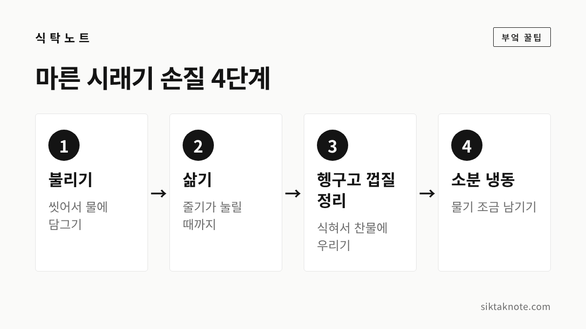
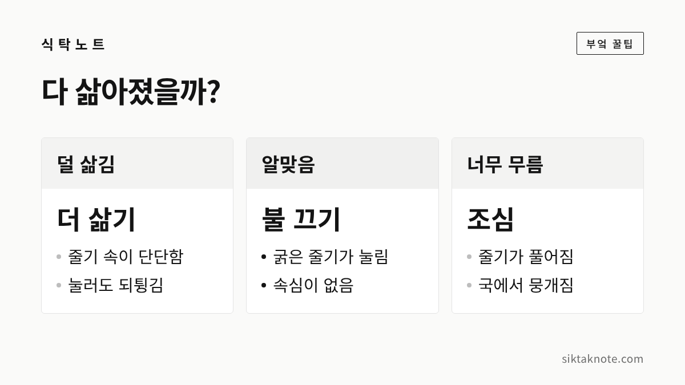

시래기 삶는 법 4단계 — 불리기부터 냉동까지

3줄 요약
- 마른 시래기는 불리기, 삶기, 헹구고 껍질 정리하기, 소분 냉동하기의 4단계로 손질해요.
- 시간은 시래기 굵기와 마른 정도에 따라 달라지니, 포장 안내를 따르고 줄기를 눌러 보며 확인합니다.
- 삶은 시래기는 물기를 조금 남겨 한 번 먹을 만큼씩 얼려 두면 국이나 지짐에 바로 쓸 수 있어요.
마른 시래기는 사 두고도 선뜻 손이 가지 않는 재료인데요. 바싹 말라 뻣뻣하고, 그냥 끓이면 질기고 냄새도 남기 때문입니다. 그래도 순서만 알면 어렵지 않아요. 오늘은 불리기, 삶기, 헹구고 껍질 정리하기, 소분해서 냉동하기, 이렇게 4단계로 나눠 말씀드리겠습니다.

시작하기 전에 알아 둘 것
시래기는 무청을 말린 것입니다. 배춧잎을 말린 우거지와는 다른 재료예요. 양구 시래기가 어떻게 만들어지는지는 양구 시래기 이야기에 적어 두었습니다.
불리는 시간과 삶는 시간은 시래기마다 꽤 달라서 하나의 숫자로 말하기가 어려운데요. 이 글에 나오는 시간은 서대문구청 공식 블로그가 소개한 방법을 참고한 것입니다. 농촌진흥청 자료에서는 마른 시래기를 불리는 시간을 따로 안내한 것을 찾지 못했어요. 그러니 숫자는 어디까지나 하나의 예로 보시고, 사 오신 제품 포장지에 안내가 있다면 포장 안내를 따르세요. 마지막에는 늘 줄기를 직접 눌러 보고 정하시는 게 가장 정확합니다.
1단계 불리기
먼저 마른 시래기를 물에 한 번 씻어 먼지를 털고 물기를 뺍니다. 그다음 큰 그릇에 담고 물을 넉넉히 부어 주세요. 시래기는 불리면 양이 크게 늘어나거든요.
서대문구청 블로그는 찬물에 끓는 물을 섞어 약 40도의 따뜻한 물을 만들고, 그 물에 30분 동안 불리는 방법을 소개했습니다. 이때 파란 물이 우러나오는데, 이 물은 버리고 다음 단계로 넘어가면 됩니다.
찬물에 오래 담가 불리는 방법도 많이 쓰지만, 그 시간은 공공기관 자료로 확인하지 못했어요. 어느 방법이든 줄기 끝을 만져 보아 말랑해졌는지가 기준입니다. 날이 따뜻할 때는 냉장고에 넣어 불리면 안전합니다.
2단계 삶기
불린 시래기는 새 물을 받은 큰 냄비에 넣고 삶습니다. 시래기가 물에 푹 잠기게 하는 게 좋아요. 서대문구청 블로그는 이 과정을 40분 정도로 안내했고, 압력밥솥을 쓰면 15분 삶은 뒤 김을 빼지 않고 그대로 두라고 했습니다. 압력밥솥은 제품 설명서를 함께 확인하세요.
삶는 시간을 시계로만 정하지 마시고, 가장 굵은 줄기를 하나 건져 식힌 뒤 손가락으로 눌러 보세요. 손톱으로 눌릴 만큼 속까지 부드러우면 된 거예요. 아직 단단하게 되튕기면 조금 더 삶으시면 됩니다. 물이 졸아 시래기가 드러나면 물을 더 부어 주세요.

다 삶았다면 불을 끄고 뚜껑을 덮은 채 삶은 물째 식혀 둡니다. 이렇게 두면 속까지 부드러워진다고 합니다.
3단계 헹구고 껍질 정리하기
식은 시래기는 찬물에 담가 특유의 냄새를 뺍니다. 서대문구청 블로그는 이 과정을 3~4시간으로 소개했고, 중간에 물을 한 번 갈아 주라고 했어요. 나물의 쓴맛이나 아린 맛을 우려내는 원리가 궁금하시면 나물 쓴맛·아린맛 빼는 법도 참고하세요.
우린 시래기는 건져서 물기를 짠 뒤 껍질을 정리합니다. 굵은 줄기는 끝을 꺾어 질긴 겉껍질과 섬유질을 길게 벗겨 내세요. 같은 안내에서는 이렇게 손질한 뒤 먹기 좋게 4~5cm 길이로 자르라고 했습니다. 껍질을 벗겨 두면 먹을 때 씹히는 느낌이 훨씬 부드러워져요.
물기를 짤 때는 너무 세게 쥐어짜지 않는 게 좋습니다. 바로 다음 단계인 냉동에서 물기가 조금 남아 있는 편이 낫거든요.
4단계 나눠서 냉동하기
삶은 시래기는 한 번에 다 먹기 어려우니, 먹을 만큼씩 나눠서 얼려 두면 편합니다. 농촌진흥청 그린매거진(참고 자료: 농사로)에는 삶은 시래기를 비닐 팩에 밀봉해 냉동하라고 되어 있고, 물기가 없으면 질겨지니 물기가 조금 남은 상태로 얼리는 것이 좋다고 했습니다.
- 한 번 먹을 만큼씩 덜어 지퍼백에 담습니다.
- 납작하게 펴서 공기를 최대한 빼고 입구를 닫아요.
- 날짜를 적어 냉동실에 넣으세요.
냉동한 시래기는 찌개나 국에 넣을 때 해동하지 않고 그대로 넣어도 됩니다. 한 번 해동한 것은 다시 얼리지 않는 게 좋겠습니다. 냉동 보관이 영원한 건 아니니, 먼저 얼린 것부터 꺼내 쓰세요.
삶아 둔 시래기로 끓이는 국과 지짐
손질해 둔 시래기가 있으면 한 끼가 금방 차려집니다. 시래기는 구수한 맛이 강해서 된장, 들기름, 들깻가루와 특히 잘 어울려요.
시래기 된장국은 먹기 좋게 썬 시래기에 된장을 넣고 조물조물 무친 뒤, 멸치 육수나 물에 끓이면 됩니다. 미리 된장을 무쳐 두면 간이 속까지 배어요.
시래기 지짐은 냄비에 들기름을 두르고 시래기를 볶다가, 된장이나 국간장으로 간을 하고 육수를 자작하게 부어 졸이듯 익힙니다. 마지막에 들깻가루를 넣으면 고소해요.
농촌진흥청 그린매거진에는 삶은 양구 시래기를 넣은 찜닭 요리도 소개돼 있었는데요. 이때도 삶은 시래기가 얼마나 연한지에 따라 익히는 시간을 조절하라고 했습니다. 냉동해 둔 시래기가 있으면 국, 지짐, 조림까지 두루 쓰실 수 있습니다.
이런 시래기는 먹지 않습니다
말린 시래기는 습도가 높으면 곰팡이가 생기거나 상할 수 있다고 알려져 있어요. 사 두신 시래기를 열었을 때 곰팡이가 보이거나 쉰내가 나면 먹지 마세요. 삶은 시래기도 끈적이거나 냄새가 이상하면 버리는 게 안전합니다.
마른 시래기는 습기가 차지 않는 서늘한 곳에서 보관하시고, 삶은 시래기는 실온에 오래 두지 말고 식으면 바로 냉동하세요.
자주 묻는 질문
불린 물과 삶은 물은 버려야 하나요?
불릴 때 우러난 파란 물은 버리고 새 물에 삶습니다. 삶은 시래기는 찬물에 우리는 동안에도 물을 한 번 갈아 주세요.
이미 삶아서 파는 시래기도 같은 순서로 하나요?
삶아 둔 제품은 불리고 삶는 단계가 이미 끝나 있을 수 있어요. 제품마다 다르니 포장 뒷면의 조리 안내를 먼저 확인하세요.
줄기가 아주 굵은데 껍질은 꼭 벗겨야 하나요?
굵은 줄기는 겉껍질이 질기게 남기 쉬워서 벗겨 주는 게 좋습니다. 가는 줄기나 잎 쪽은 그대로 쓰셔도 됩니다.
11월에 양구 시래기를 만나려면
올해 '2026 청춘양구 펀치볼 사과·시래기축제'는 11월 6일부터 8일까지 해안면에서 열린다고 보도됐습니다. 올해 세부 프로그램은 아직 확인하지 못했으니, 가시기 전에 양구문화재단 공지를 살펴보시는 게 좋겠습니다. 시래기가 어떤 곳에서 만들어지는지는 양구 시래기 이야기에 담아 두었어요.
집에서 무를 사다 보면 무청이 남을 때가 있는데요. 무청을 두는 방법은 무 오래 보관하는 법에 적어 두었습니다. 마른 시래기가 있는 날은 불리기, 삶기, 헹구고 껍질 정리하기, 소분 냉동, 이렇게 4단계만 기억하시면 됩니다.